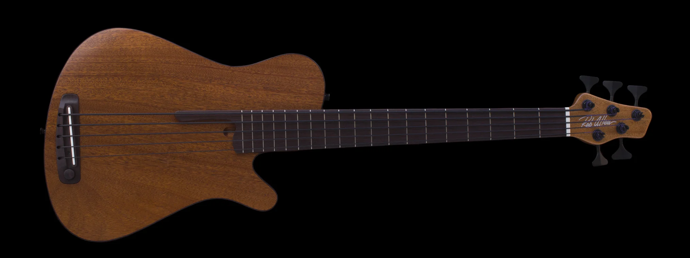

The Short Scale Bass
 The Short Scale Bass is a type of bass that has a string length of 30 inches or less.
They are much smaller than a normal bass and makes more warmer sounds.
The smallness of the bass provides comfort and easy handling. The smallness of the
bass makes it easier to carry, and the shortness of the strings makes it easier to
fret notes and bend strings.
The Short Scale Bass is a type of bass that has a string length of 30 inches or less.
They are much smaller than a normal bass and makes more warmer sounds.
The smallness of the bass provides comfort and easy handling. The smallness of the
bass makes it easier to carry, and the shortness of the strings makes it easier to
fret notes and bend strings.
Length of bass:
Around 30 in
Type of sound it makes:
A warm, thick, and “thumpy”
Tone
Cost:
$200-600

Click to go back to the homepage!